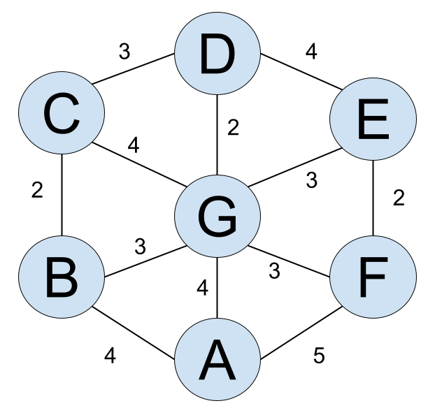

アル氏は遊園地Hexに来ている。遊園地Hexにはアトラクションが図のように7つ存在し, 隣接するアトラクションとの間に道があって,その道のみを通って別のアトラクションに行くことができる。各アトラクション間の移動にかかる時間 (以下,移動時間)は図の通りである。いま,アル氏はアトラクションAにいる。アトラクションB~Gをちょうど一回ずつ 回ってアトラクションAに戻るとき,移動時間の合計の最小値を求めよ。
21
いつGを訪れるか
B~Gのどの頂点も一度しか訪れることができないので,
Gに寄らない場合を考えると,
回り方は次の2通り。
① A→B→C→D→E→F→A
② A→F→E→D→C→B→A
Gに寄る場合を考えると,
上の→の1つをを→G→で置き換えればよいので,
回り方は,
(通り)。
移動時間については①,②で違いはない。
X→G→Yとおく。
XYでアトラクションX,Y間の移動時間を表すものとすると,
X,Yは(XG+GY)-XYが最小となるように選べばよい。
よって,D,Eの間でGを訪れると移動時間(の合計)は最短になる。
以上から,移動時間(の合計)の最小値を求めよ。,A→B→C→D→G→E→F→Aの順で回るとき,最小値21を取る。
(答) 21